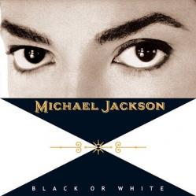

|  |
|
(Lyrics) I took my baby On a saturday bang Boy is that girl with you Yes we're one and the same Now I believe in miracles And a miracle Has happened tonight But, if You're thinkin' About my baby It don't matter if you're Black or white They print my message In the saturday sun I had to tell them I ain't second to none And I told about equality An it's true Either you're wrong Or you're right But, if You're thinkin' About my baby It don't matter if you're Black or white I am tired of this devil I am tired of this stuff I am tired of this business Sew when the Going gets rough I ain't scared of Your brother I ain't scared of no sheets I ain't scare of nobody Girl when the Goin' gets mean Protection For gangs, clubs And nations Causing grief in Human relations It's a turf war On a global scale I'd rather hear both sides Of the tale See, it's not about races Just places, Faces Where your blood Comes from Is where your space is I've seen the bright Get duller I'm not going to spend My life being a color Don't tell me you agree with me When I saw you kicking dirt in my eye But, if You're thinkin' about my baby It don't matter if you're black or white I said if You're thinkin' of Being my baby It don't matter if you're black or white I said if You're thinkin' of Being my brother It don't matter if you're Black or white Ooh, ooh Yea, yea, yea now Ooh, ooh Yea, yea, yea now It's black, it's white It's tough for you To get by It's black , it's white, whoo It's black, it's white It's tough for you To get by It's black , it's white, whoo. |
(Letra en Español) Tomé a mi nena De repente un sábado Chico, es esa chica contigo Si, somos uno y el mismo Ahora creo en milagros Y un milagro Ha sucedido esta noche Pero si Estás pensando En mi nena No importa si tu eres Negro o blanco Ellos imprimen mi mensaje En un sol de sábado Tuve que decirles Que yo no seguiré a ninguno Y hablé de igualdad Y es verdad O estás equivocado O tienes razón Pero si Estás pensando En mi nena No importa si tu eres Negro o blanco Estoy cansado de esta maldad Estoy cansado de este material Estoy cansado de este negocio Coser cuando Seguir se pone áspero No tengo miedo de Tu hermano No tengo miedo de ninguna hoja No tengo miedo de nadie Chica, cuando Seguir se pone malo Protección Para pandillas, clubes Y naciones Causando daño en Relaciones humanas Es una guerra En una segunda escala Yo mejor oiría ambos lados Del chisme Mira, no es sobre razas Solo lugares Caras De donde tu sangre Proviene Es donde está tu espacio He visto el brillo Se pone lerdo No voy a gastar Siendo alguien de color No me digas que estás de acuerdo conmigo Cuando te vi pateando suciedad en mi ojo Pero si Estás pensando en mi nena No importa si tu eres negro o blanco Dije que si Estás pensando En ser mi nena No importa si tu eres negro o blanco Dije que si Estás pensando En ser mi nena No importa si tu eres Negro o blanco Ooh, ooh Si, si, si ahora Ooh, ooh Si, si, si ahora Es negro, es blanco Es duro para ti Pasar Es negro, es blanco, whoo Es negro, es blanco Es duro para ti Pasar Es negro, es blanco, whoo. |